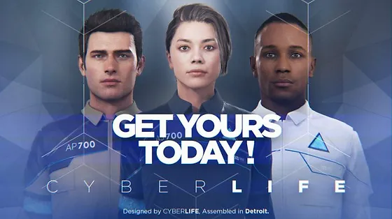

CyberLife is a pioneering technology company at the
forefront of artificial intelligence and robotics, specializing in the development of
advanced androids. Founded with a vision to revolutionize human-robot interaction,
CyberLife combines cutting-edge AI technology with innovative engineering to create
androids that are not only functional but also lifelike.
CyberLife's androids are designed to assist humans in various aspects of daily life,
from domestic chores to professional tasks. Each android is equipped with
state-of-the-art sensors, adaptive learning algorithms, and an intuitive user interface,
allowing for seamless integration into any environment. With a focus on safety,
reliability, and user experience, CyberLife ensures that their androids can understand
and respond to human emotions and commands with precision and empathy.
The company's flagship product line includes a range of android models tailored to
specific industries, such as healthcare, customer service, and manufacturing.
CyberLife's healthcare androids are designed to provide compassionate care and support
to patients, while their customer service models offer efficient and personalized
assistance in retail and hospitality settings. In manufacturing, CyberLife's androids
enhance productivity and quality control with their precision and endurance.
CyberLife is committed to ethical AI development, prioritizing transparency, privacy,
and security in all their products. They engage in continuous research and development
to push the boundaries of what is possible with AI and robotics, striving to create a
future where humans and androids coexist harmoniously. With a global presence and a
reputation for excellence, CyberLife is leading the charge in transforming the way we
live and work through intelligent automation.
CyberLife’s androids offer a diverse range of services tailored to meet the needs of various sectors and enhance daily living. In homes, androids provide comprehensive domestic support, including cleaning, cooking, childcare, and elderly care, ensuring a safe and comfortable environment. In the healthcare industry, they assist with patient monitoring, medication administration, and emotional support, significantly improving patient care and hospital efficiency. For businesses, CyberLife androids streamline operations by handling customer service inquiries, managing inventory, and performing routine maintenance tasks, thereby increasing productivity and customer satisfaction. Additionally, in the manufacturing sector, these androids excel in precision-based tasks such as assembly line production, quality control, and logistics management, ensuring optimal performance and reduced operational costs. CyberLife’s commitment to integrating advanced AI and robotics into everyday life underscores their mission to enhance human experiences and capabilities across all domains.
